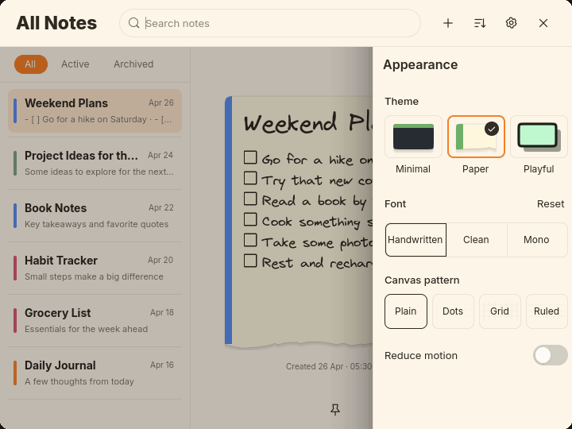
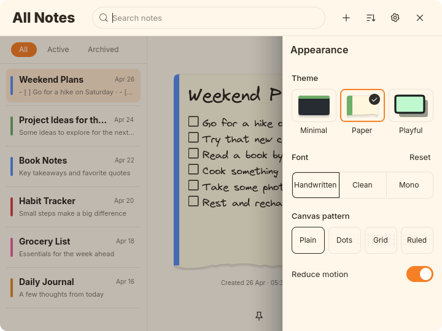
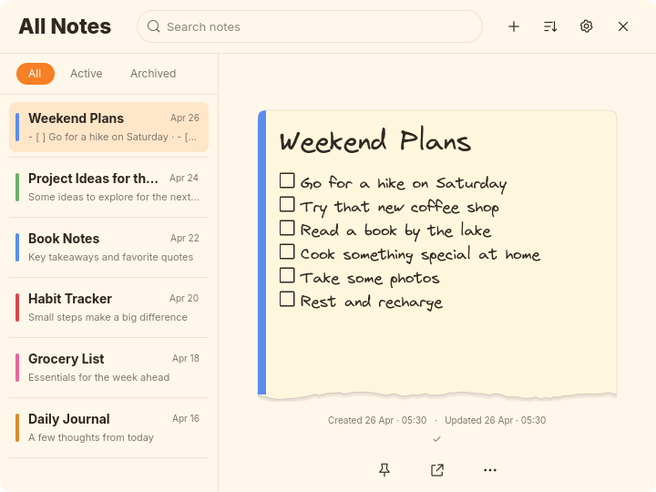
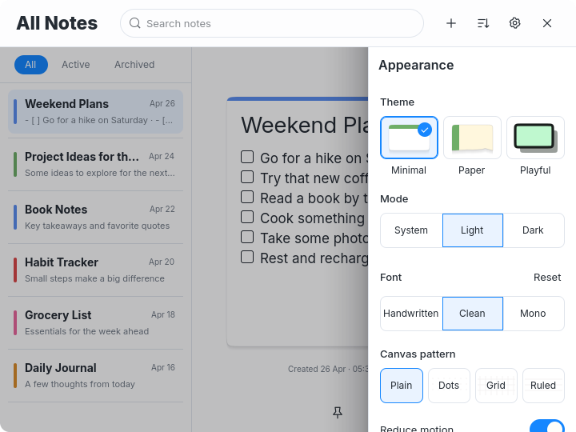

Appearance opens as one panel
Requested unified Appearance drawer correction. Header and controls open/close together, the back arrow is removed, and filters dim with the notes. Visually approved October 1, 2026. User authorized commit and push.
Actual GTK captures use temporary notes, config and cache. No user notes or desktop configuration changed.
Actual opening and closing animation

Recorded GTK frames, 25ms samples with pauses at open/closed endpointsThe header and body share the same native drawer. Frame checks verify they move together while the filter band stays in place. Reduce motion remains supported; a deferred native layout pass preserves dimming after responsive layout changes. The Settings button toggles the whole drawer.
Before and after
 Before: heading outside the drawer, filters remain bright and back arrow is visible
Before: heading outside the drawer, filters remain bright and back arrow is visible
After: one drawer, dimmed filters and removed back arrowPaper

Settings closedSettings open, unified panel and dimmed backgroundPaper: minimum/wide sizes, scrolling and individual-note regression captures
Playful
Playful: minimum/wide sizes, scrolling and individual-note regression captures
Minimal Light
Settings closed
Settings open, unified panel and dimmed background Minimal Light: minimum/wide sizes, scrolling and individual-note regression captures
Minimal Dark
Minimal Dark: minimum/wide sizes, scrolling and individual-note regression captures
Typography and remaining differences
Appearance is Inter 16px at weight 600. Note Medium title/body remain Paper and Playful 30/17px in Virgil, and Minimal Light/Dark 28/17px in Inter. Sidebar title/snippet/date remain 14/11/10px. Theme palettes, borders, shadows, icons and canvas patterns keep their preceding choices. This corrects the circled arrow and independent header/body movement in the supplied screenshot. Earlier theme-reference differences remain recorded in each theme review; no new visual choice is inferred from this correction.
Verification and limits
Actual GTK checks cover common parentage, arrow removal, filter modal hit testing, Settings toggling, scrolling, default/minimum/wide layouts, opening/closing frames and reduce motion. Formatting, 22 tests, strict Clippy, release build, diff and the GTK shared-editor regression pass. No GTK warnings/errors in final runs.
Typography, theme palettes and canvas-pattern behavior retain their prior choices. The existing wide responsive sidebar remains. Native pointer/Escape/timer checks were not repeated. This correction remains under review. No commit or push.